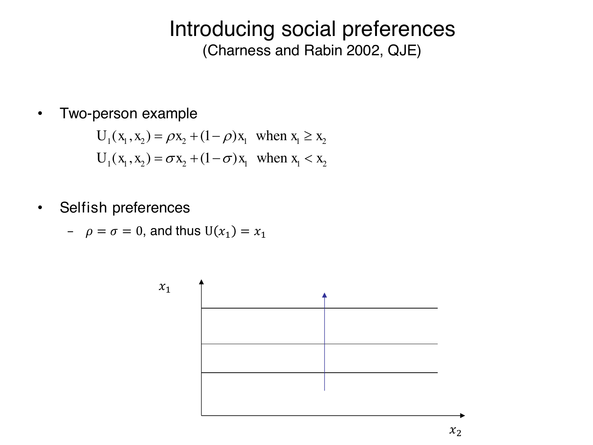

Calculate piecewise utility and interpret payoff preferences
Useful first: Solve and interpret ultimatum and dictator allocations
Lesson outline
- 02IntroductionSee the main question, learning objectives and prerequisites.
- 03Key definitions and conceptsGet familiar with the important terms and notation.
- 04A piecewise utility function for two peopleLet the stated quantities be person 1's monetary payoff and the stated quantities person 2's payoff, measured in the same monetary units. the stated quantities describes person 1's…
- 05How to read the indifference curvesAn indifference curve joins payoff pairs giving the same utility to person 1.
- 06Selfishness, altruism and spitefulnessSetting the stated quantities gives the stated quantities.
- 07Inequality aversion changes sign across equalityInequality aversion dislikes disparities between own and another person's monetary payoff.
- 08Connect the reasoningExplore connect the reasoning.
- 09Worked exampleFollow a complete application of the reasoning.
- 10Practise the reasoningWork through written tasks, with optional support and solutions.
- 11Check your reasoning: an offline quizCheck your choices and see feedback without a connection.
- 12Check your understandingReview the key distinctions and check what you can explain.
- 13Test yourself laterTry another prepared question before rereading.
- 14SourcesFind the materials and limits behind the lesson.
Introduction
In this lesson, calculate piecewise utility and interpret payoff preferences.
2.1 What you’ll learn
- Use the monetary regime condition correctly, calculate both regimes and equality, rewrite the disparity penalties.
- Derive indifference slope with \(x_1\) vertical/\(x_2\) horizontal; explain \(w=0, 0<w<1, w<0, w=1\) and \(w>1\) boundaries.
- Distinguish selfish, altruistic, spiteful and inequality-averse parameter signs, including \(\sigma <-\rho\) for the taught inequality case.
- Interpret stronger behindness penalty and compare equal/unequal allocations without asserting that all equality dominates; do not estimate parameters from aggregate behavior.
2.2 Before you begin
Check the foundations
A receiver accepts 12 from a 90-unit pie. For the receiver as person1, label \(x_1\) and \(x_2\); does a monetary maximizer value \(x_2\) directly?
Reveal foundation explanation
\(x_1=12,x_2=78\); no, monetary-only utility is own12.
Solve \(0.2b+0.8a=16\) for a in terms of b.
Reveal foundation explanation
\(a=20-b/4\); slope \(-1/4\).
Key definitions and concepts
- Ahead regime: The relevant preference weight is selected when own monetary payoff exceeds the other person’s.
- Behind regime: The other regime applies when own monetary payoff is lower.
- Indifference curve: A set of own/other payoff combinations giving the same utility under the stated model.
A piecewise utility function for two people
Let \(x_1\) be person 1's monetary payoff and \(x_2\) person 2's payoff, measured in the same monetary units. \(U_1\) describes person 1's preferences over the pair. Consider the following example under the heading Charness and Rabin (2002):
The dimensionless parameter \(\rho\) weights the other person's payoff when person 1 is at least as well off; \(\sigma\) applies when person 1 is behind. The coefficient on one's own payoff is correspondingly \(1-\rho\) or \(1-\sigma\).
The conditions refer to monetary payoffs, not to a comparison of the two people's utilities. The lecture supplies this simplified example;
it is not a reproduction of the full cited paper.
Algebraic unpacking: when \(x_1\ge x_2\), write utility as \(x_1-\rho(x_1-x_2)\); when \(x_1<x_2\), write it as \(x_1+\sigma(x_2-x_1)\). At equality both expressions give \(U_1(x,x)=x\), so the pieces meet. Their slopes can differ at the equality line. Changing \(\rho\) or \(\sigma\) changes how person 1 trades off own income against the other person's outcome.
How to read the indifference curves
An indifference curve joins payoff pairs giving the same utility to person 1. In the source figures the vertical axis is \(x_1\) and the horizontal axis is \(x_2\). The gray diagonal marks equal monetary payoffs. Do not reverse the axes when interpreting the curve's slope.
Within either regime, let \(w\) stand for its active weight, \(\rho\) or \(\sigma\), and fix utility at \(k\). Derived from the displayed function, for \(w\ne1\),
With \(w=0\) the curve is horizontal. With \(0<w<1\) it slopes downward: more income for person 2 can compensate for less own income.
With \(w<0\) it slopes upward: when the other person's gain lowers utility, own income must rise to compensate. These slope descriptions use the source figures' positive own-payoff coefficient.
The lecture's general positive-weight statement does not itself impose an upper bound on every altruistic weight; if \(w=1\), own payoff drops out and the curve is vertical, while \(w>1\) changes the own-payoff sign.
These boundary cases are algebraic qualifications, not additional empirical claims.
Selfishness, altruism and spitefulness
6.1 Selfish preferences
Setting \(\rho=\sigma=0\) gives \(U_1=x_1\). The other person's monetary payoff has no direct effect on person 1's utility. This is the benchmark used to solve the anonymous games by monetary incentives alone. A horizontal indifference curve means that any \(x_2\) is equally attractive when \(x_1\) is unchanged; the upward arrow in the source shows preference for more own income.

own payoff is vertical, the other person's payoff horizontal. With both social weights zero, the horizontal curves preserve own payoff, and higher curves are preferred.
6.2 Altruism
The lecture calls \(\rho>0\) and \(\sigma>0\) pure altruism: the other person's payoff enters utility positively whether person 1 is ahead or behind. It sometimes adds \(0<\sigma<\rho\), meaning greater weight on the other person when that person has less than one's own payoff.
In that case, the weight changes at equality even though both weights remain positive. Do not confuse the larger ahead-regime weight with a negative behind-regime weight.

downward-sloping segments show willingness to trade own income against the other person's income in the plotted positive-own-weight case. A change of slope at the equality diagonal represents different weights across the two regimes. The figure supplies no numerical parameter estimate.
6.3 Spitefulness
For spiteful preferences, \(\rho<0\) and \(\sigma<0\). Increasing the other person's payoff while holding one's own fixed lowers utility in either regime. This is different from being selfish: a selfish person is indifferent to that change, while a spiteful person dislikes it. The own-payoff coefficient is then greater than one, and the indifference segments slope upward.

upward-sloping curves show that a higher other-person payoff requires extra own income to maintain utility. The preference arrow points toward more own income and less income for the other person; the gray equality line locates the payoff regimes.
Inequality aversion changes sign across equality
Inequality aversion dislikes disparities between own and another person's monetary payoff. The lecture labels its discussion Fehr and Schmidt (02) and specifies
When person 1 is ahead, the positive \(\rho\) means that increasing the poorer person's payoff at fixed own income reduces the disparity and raises utility. When person 1 is behind, the negative \(\sigma\) means that increasing the richer person's payoff at fixed own income widens the disparity and lowers utility.
The last inequality says \(-\sigma>\rho\): the disadvantageous-inequality penalty is stronger than the advantageous-inequality penalty.
The rewritten function makes the penalties explicit:
This is derived from the source's function, not an extra estimated model. The first penalty subtracts a fraction of the amount by which person 1 is ahead; the second subtracts a positive weight times the amount by which person 1 is behind. The model still values own income. It does not imply that any equal allocation is always preferred to every unequal allocation regardless of the amount of money involved.

each curve slopes down in the ahead region above the equality diagonal, then up in the behind region below it. The kink reflects a change from positive to negative weight on the other person's payoff. Higher-own-payoff curves represent higher utility; the picture is qualitative, not an estimate of the two penalty parameters.
This distinction helps interpret ultimatum rejection: a receiver may prefer both players receiving zero to accepting a strongly disadvantageous positive split if the inequality penalty is sufficiently large. The relevant comparison is utility, not only money.
Whether rejection occurs depends on the person's parameters and offered allocation; the lecture's aggregate rejection rates do not identify those parameters for each individual.
Connect the reasoning
- Select \(w=\rho\) for \(x_1\ge x_2\), otherwise \(w=\sigma\). Then \(U_1=wx_2+(1-w)x_1=x_1+w(x_2-x_1)\). Equality yields \(U_1(x,x)=x\) from either expression, so the pieces meet.
- With \(0<\rho<1\) and \(\sigma<-\rho<0\), ahead utility is \(x_1-\rho(x_1-x_2)\) and behind utility \(x_1-(-\sigma)(x_2-x_1)\). The disparity amounts are nonnegative in their own regimes; both are penalties. Since \(-\sigma>\rho\), the behindness penalty per unit is larger. This does not remove the value of own income.
- Fix utility \(k\): \(wx_2+(1-w)x_1=k\). For \(w\ne1\), \(x_1=(k-wx_2)/(1-w)\), so with vertical \(x_1\) and horizontal \(x_2\) the slope is \(-w/(1-w)\). At zero weight it is horizontal; at \(0<w<1\) downward; at negative weight upward. At \(w=1\) only \(x_2\) matters and the curve is vertical. At \(w>1\) the own coefficient is negative and the usual positive-own-weight interpretation fails; algebra gives an upward slope. A positive weight alone does not imply the plotted downward shape.
- Selfishness: both weights 0. Altruism: both positive, sometimes \(0<\sigma<\rho\), with no universal upper bound imposed by the lecture’s general definition. Spite: both negative. Inequality aversion: ahead positive/behind negative with the taught stronger-penalty condition. Source figures are qualitative, not estimates.
- To decide between allocations calculate utilities; an unequal high-payoff pair may outrank a low equal pair. Costly UG rejection can be consistent with a sufficiently strong behindness penalty, but aggregate rejection does not identify each individual’s parameters.
Worked example
9.1 — Two regimes and curves
Setup: Hypothetical \(\rho =1/4,\sigma =-1/2\). Calculate \(U\) at \((80,40),(30,90),(40,40)\), slopes, and compare \((80,40)\) with equal \((40,40)\).
Worked reasoning and result: Ahead:\(80-(1/4)40=70\). Behind:\(30-(1/2)60=0\).
Equal \(40\). Slopes ahead \(-(1/4)/(3/4)=-1/3\);
behind \((1/2)/(3/2)=1/3\). Both penalties subtract disparities;
behind rate \(1/2\) exceeds \(1/4\). Unequal utility \(70\) exceeds equal \(40\).
At \(w=0\) horizontal,\(w=1\) vertical,\(w>1\) own coefficient negative; only \(0<w<1\) slopes down.
Selfish \(\rho=\sigma=0\), altruistic both positive, spite both negative, taught inequality \(\rho\in(0,1)\),\(\sigma<-\rho\). No parameters estimated.
Checks and interpretation: Verify labels, active conditions, dimensions/signs where applicable and every source limitation before inferring a choice.
Practise the reasoning
Write your reasoning before revealing an explanation. Begin with support, then apply the ideas to another situation.
10.1 Written exercise 1
Hypothetical \(\rho =1/5,\sigma =-2/5\).
Solve the following:
- For \((70,20),(20,70),(40,40)\), fill regime, disparity form and \(U\).
- Complete the slope derivation and all weight-boundary interpretations;
- classify the four preference types and compare unequal \((70,20)\) to equal \((40,40)\).
Show a hint
Pause before calculating or choosing an explanation:
- What quantities, actors or outcomes are being compared? Write their roles, units and dates beside them.
- Which condition decides whether the relationship applies? Check the relevant definition before using a formula or classifying the case.
- What would have to remain fixed for your comparison to be meaningful? Work through one link in the reasoning at a time.
- How could you check the direction, boundary case or alternative explanation before stating your conclusion?
A local draft for your own study.
Reveal explanation
Key: Ahead \(70-(1/5)50=60\); behind \(20-(2/5)50=0\);
equal \(40\). \(\text{Slopes}=-1/4\) and \(2/7\) from \(-w/(1-w)\), with \(x_1\) vertical. \(w=0\) horizontal,\(0<w<1\) downward,\(w<0\) upward,\(w=1\) vertical,\(w>1\) own coefficient negative and upward. Signs selfish \(\rho=\sigma=0\), altruism \(\rho>0,\sigma>0\) (no universal \(<1\) restriction), spite \(\rho<0,\sigma<0\), inequality \(0<\rho<1\)/\(\sigma<-\rho\).
Behind penalty \(.4>.2\); \(\text{unequal }60>\text{equal }40\) shows equality not always preferred. Qualitative figures/aggregate behavior do not estimate weights.
10.2 Written exercise 2
Hypothetical \(\rho =1/4,\sigma =-3/4\).
Solve the following:
- Write the correct utility regime and disparity form and compute \(U\) for \((100,40),(40,100),(50,50)\).
- Derive each slope with source axes and explain \(w=0,0<w<1,w<0,w=1,w>1\).
- State all four preference-sign categories, stronger behindness condition and compare \((100,40)\) with \((50,50)\);
- explain whether aggregate rejection estimates these parameters.
A local draft for your own study.
Reveal explanation
Key: Ahead \(100-(1/4)60=85\); behind \(40-(3/4)60=-5\);
equality \(50\). Slopes ahead \(-1/3\),behind \(3/7\) via \(x_1=(k-wx_2)/(1-w)\), axes \(x_1\) vertical,\(x_2\) horizontal. \(w=0\) horizontal,\(0<w<1\) downward,\(w<0\) upward,\(w=1\) vertical,\(w>1\) negative own coefficient/upward.
Selfish \(\rho=\sigma=0\), altruism both positive with no universal upper bound, spite both negative, taught inequality \(0<\rho <1\) and \(\sigma <-\rho\). Behind penalty \(.75>.25\); \(\text{unequal }85>\text{equal }50\), so equality not always preferred.
Aggregate rejection and qualitative curves cannot estimate these individual parameters.
10.3 Written exercise 3
Hypothetical \(\rho =2/5,\sigma =-3/5\).
Solve the following:
- Calculate the correct regime utility and disparity penalties at \((90,30),(30,90),(40,40)\);
- derive source-axis slopes and all five weight boundary/sign cases.
- Classify selfish/altruistic/spiteful/inequality signs, interpret relative penalties and compare unequal \((90,30)\) with equal \((40,40)\).
- Can lecture aggregate choices identify the weights?
A local draft for your own study.
Reveal explanation
Key: Ahead \(90-(2/5)60=66\); behind \(30-(3/5)60=-6\);
equal \(40\). Slopes \(-2/3,3/8\) derived \(-w/(1-w)\), \(x_1\) vertical/\(x_2\) horizontal. \(w=0\) horizontal,\(0<w<1\) down,\(w<0\) up,\(w=1\) vertical,\(w>1\) own sign negative and up.
Selfish \(\rho=\sigma=0\), altruism positive both (not automatically \(<1\)), spite negative both, inequality \(\rho\in(0,1)\),\(\sigma <-\rho\). Behind \(.6>.4\). \(\text{Unequal }66>\text{equal }40\);
equal allocations do not dominate universally. No individual parameter identification from aggregate choices/qualitative source curves.
10.4 Another chance to practise
Repair hypothetical \(\rho =1/10,\sigma =-3/10\).
Solve the following:
- Compute \(U\) and disparity penalties for \((110,50),(50,110),(60,60)\);
- derive slopes with correct axes and all boundary cases.
- Classify the four preference types, interpret penalty asymmetry, compare unequal \((110,50)\) to equal \((60,60)\) and state identification limits.
A local draft for your own study.
Reveal explanation
Ahead \(110-.1(60)=104\); behind \(50-.3(60)=32\);
equal \(60\). Slopes \(-1/9\) and \(3/13\) via \(-w/(1-w)\), own vertical/other horizontal. \(w=0\) horizontal,\(0<w<1\) down,\(w<0\) up,\(w=1\) vertical,\(w>1\) negative own coefficient/up.
Selfish \(\rho=\sigma=0\), altruism \(\rho>0,\sigma>0\) no universal \(<1\), spite \(\rho<0,\sigma<0\), inequality \(0<\rho <1,\sigma <-\rho\). Behind \(.3>.1\); \(\text{unequal }104>\text{equal }60\).
No individual parameter estimates from aggregate choices or qualitative figures.
Check your reasoning: an offline quiz
Choose one answer per question. Check individual answers or check the whole quiz. Each option includes feedback on the reasoning, and everything works offline.
Reveal explanation
Own 80 minus one quarter of the 40-unit disparity is 70.
Reveal explanation
Compare own and other monetary payoff before evaluating the appropriate branch.
Reveal explanation
The disparity is 60, so \(30-(1/2)60=0\).
Check your understanding
Avoid these mistakes: applying \(\rho\) when behind, reversing axes, saying all positive weights slope down or all equal allocations win. Correction: select monetary regime before substituting; retain the \((1-w)\) own coefficient; compare utilities of both pairs.
- Use the monetary regime condition correctly, calculate both regimes and equality, rewrite the disparity penalties.
- Derive indifference slope with \(x_1\) vertical/\(x_2\) horizontal; explain \(w=0, 0<w<1, w<0, w=1\) and \(w>1\) boundaries.
- Distinguish selfish, altruistic, spiteful and inequality-averse parameter signs, including \(\sigma <-\rho\) for the taught inequality case.
- Interpret stronger behindness penalty and compare equal/unequal allocations without asserting that all equality dominates; do not estimate parameters from aggregate behavior.
Test yourself later
Return to these questions after a break, before rereading the explanation. Use a question you have not just viewed.
13.1 Review question 1
Hypothetical \(\rho =1/5,\sigma =-1/2\).
Solve the following:
- Compute both regime utilities and equality at \((120,20),(20,120),(60,60)\), using disparity penalties.
- Derive the slopes and all weight boundaries with source axes;
- identify all four preference classes and stronger behindness condition;
- compare unequal \((120,20)\) with equal \((60,60)\), and state the parameter-identification limit.
A local draft for your own study.
Reveal explanation
Key: Ahead \(120-.2(100)=100\); behind \(20-.5(100)=-30\);
equal \(60\). Slopes \(-1/4\) and \(1/3\), axes own vertical/other horizontal, from \(-w/(1-w)\). \(w=0\) horizontal;
positive below \(1\) down; negative up; \(w=1\) vertical;
above \(1\) own coefficient negative/up. Selfish \(\rho=\sigma=0\), altruism \(\rho>0,\sigma>0\) without universal\(<1\), spite \(\rho<0,\sigma<0\), inequality \(0<\rho <1,\sigma <-\rho\).
Behind \(.5>.2\). \(\text{Unequal }100>\text{equal }60\), no universal equality dominance; neither aggregate rejection nor qualitative curves estimates these parameters.
13.2 Review question 2
Hypothetical \(\rho =3/10,\sigma =-7/10\).
Solve the following:
- Use the correct regime and penalty form for \((80,30),(30,80),(45,45)\);
- derive source-axis slopes and \(w=0\)/positive-below \(1\)/negative/\(1\)/above \(1\) cases.
- State four preference classifications, relative inequality penalties and an allocation comparison;
- clarify whether the chosen parameters are estimated lecture findings.
A local draft for your own study.
Reveal explanation
Key: Ahead \(80-.3(50)=65\); behind \(30-.7(50)=-5\);
equal \(45\). Slopes \(-3/7\) and \(7/17\) derived with \(x_1\) vertical,\(x_2\) horizontal.
Zero horizontal,positive below \(1\) downward,negative upward,\(1\) vertical,above \(1\) own coefficient negative/upward. Selfish \(\rho=\sigma=0\);
altruism both positive no general upper bound; spite both negative;
taught inequality \(0<\rho <1,\sigma <-\rho\). Behind \(.7>.3\). \(\text{Unequal }65>\text{equal }45\).
These are hypothetical parameters; curves/aggregate choices do not estimate them.
Sources
Show materials and lesson scope
- Social Preferences p15 Selfish Indifference
- Social Preferences p17 Altruism Indifference
- Social Preferences p19 Spite Indifference
- Social Preferences p21 Inequality Indifference
- Social Preferences, physical PDF pp. 14–18, 20
- Social Preferences, physical PDF pp. 14, 20–21
- Social Preferences, physical PDF pp. 15, 17, 19, 21
- Social Preferences, physical PDF pp. 14–19
- Social Preferences, physical PDF p. 15
- Social Preferences, physical PDF pp. 16–17
- Social Preferences, physical PDF p. 17
- Social Preferences, physical PDF pp. 18–19
- Social Preferences, physical PDF p. 19
- Social Preferences, physical PDF pp. 20–21
- Social Preferences, physical PDF p. 21
- Social Preferences, physical PDF pp. 3, 8, 20–21
Numerical and contextual illustrations are hypothetical unless explicitly described as a reported result. Historical data, model assumptions and unresolved source differences retain their stated limits.
These exercises are for self-study. Viewing a prepared item or solution may make that item unsuitable as a fresh check in a tutor chat. This page does not record an assessed learning result.